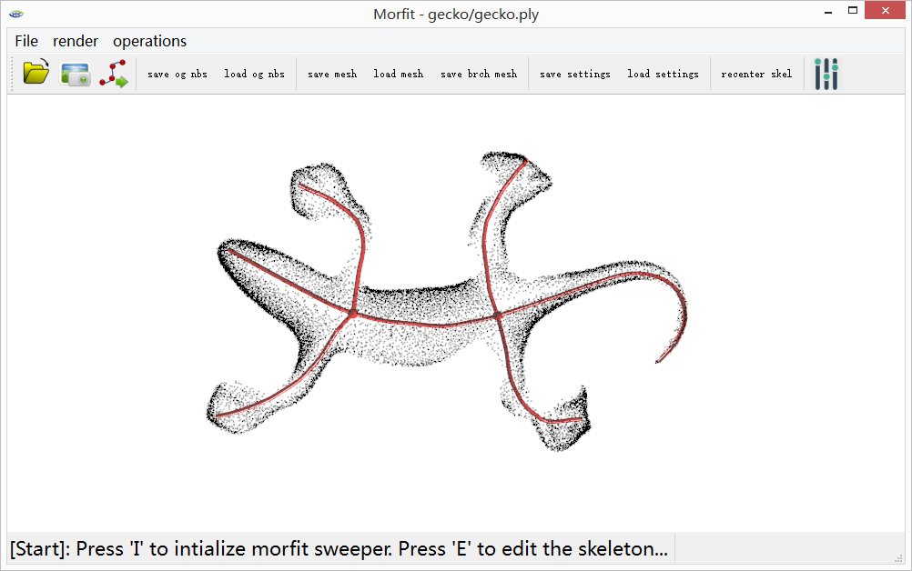

Morfit is an interactive surface reconstruction software described in the paper:
K. Yin, H. Huang, H. Zhang, M. Gong, D. Cohen-or, B. Chen. Morfit: Interactive Surface Reconstruction from Incomplete Point Clouds with Curve-Driven Topology and Geometry Control. ACM Transactions on Graphics 33(6)(Proc.SIGGRAPH ASIA 2014 )
